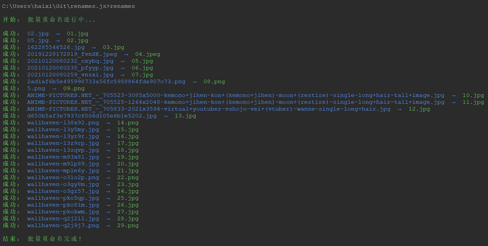
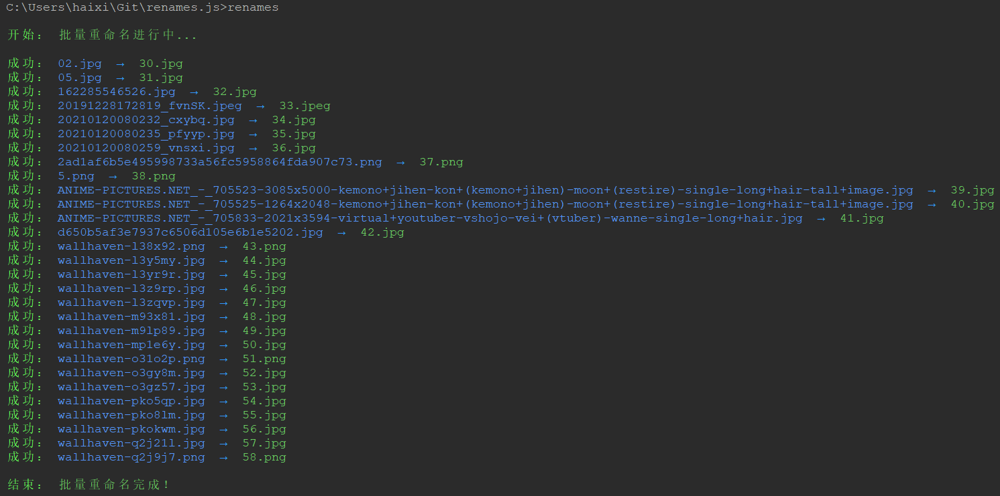
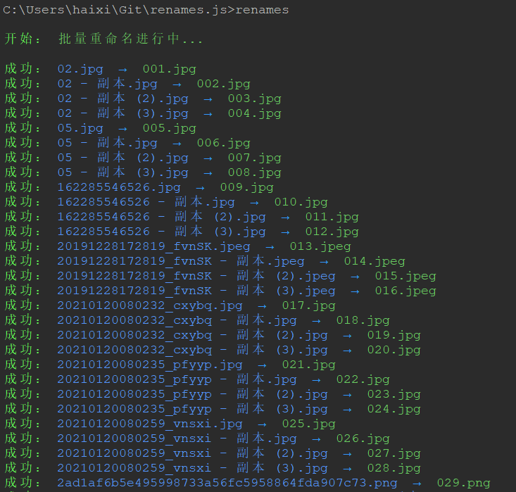
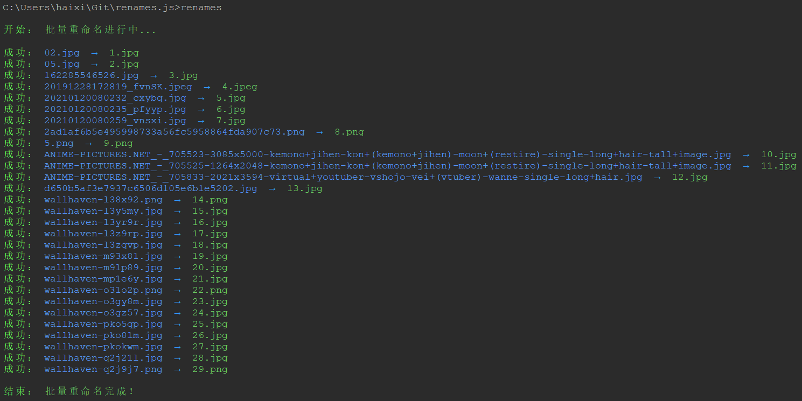
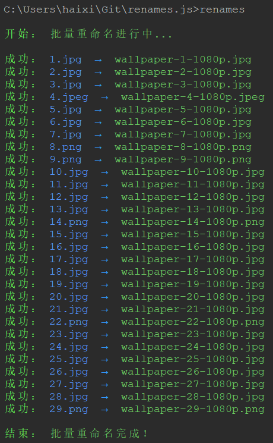
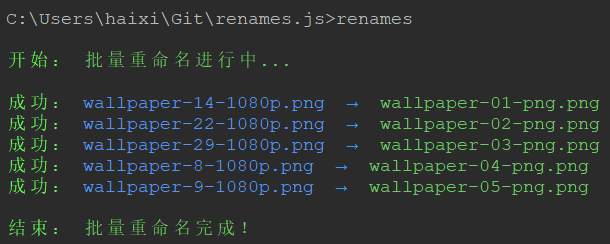
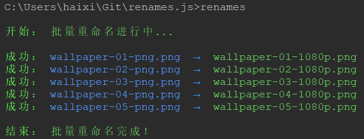
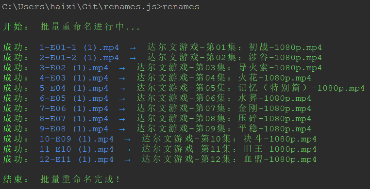

renames.js - 基于 Node 的批量文件名重命名 cli 工具库。
Features
- 支持批量重命名文件夹中的文件；
- 支持批量重命名非同一文件夹的一组文件；
- 支持指定文件名列表数据或者文件名列表文件；
- 支持文件名自动生成（章节）索引；
- 支持文件名自定义过滤文件；
- 支持文件名自定义文件排序；
- 支持文件名自定义格式化文件名；
- 支持缓存重命名数据，可恢撤销重命名操作，恢复始名称；
- 支持使用命令开启或关闭缓存功能，并支持清理缓存；
- 支持生成配置文件，方便快捷，配置灵活；
Usage
首先需要全局安装 renames.js，命令如下：
npm i -g @yaohaixiao/renames.js
全局安装完成后，就可以在命令行使用了。renames.js 使用方式如下：
renames [arguments|command] [options]
Command Introduction
renames.js 和其它 cli 工具一样，也可以通过 -h 选项获取完整帮助信息，命令如下：
renames -h
renames.js 提供目前提供 1 个 arguments 参数和 4 个 subcommands 子命令：init、revoke、cache 和 edit，以及 10 多个 options 配置选项。
Arguments:
- dir-path - 执行重命名操作的目标文件夹（绝对或相对）路径，例如："C:\Downloads"。
Options
renames.js 提供了较为丰富的 options 配置选项，用以控制重命名的操作细节处理方式：
| 参数名 | 参数说明 |
|---|---|
| --dir, --dir-path <path> | 可选，执行重命名操作的目标文件夹（绝对或相对）路径 |
| --files, --files-list <list> | 可选，文件名列表数组数据，例如："C:\第01话：新的开始.mp4,D:\动画片-第01话：新的开始-1080p.mp4" |
| --names, --names-list <list> | 可选，文件名列表数组数据，例如："新的开始,完美结局"。或者文件名列表文件的路径，例如："C:\Downloads\names.txt" |
| --prefix <prefix> | 可选，文件名的前缀字符串，例如："动画片-第01话：新的开始-1080p.mp4"中的"动画片" |
| --suffix <suffix> | 可选，文件名的后缀字符串，例如："动画片-第01话：新的开始-1080p.mp4"中的"1080p" |
| --connector <connector> | 可选，文件名的前/后缀字符串间的连接字符串，例如："动画片-第01话：新的开始-1080p.mp4"中的"-" |
| --auto-index [enable] | 可选，是否自动生成索引编号（default：false） |
| --start-index <startIndex> | 可选，索引编号起始值（default：0） |
| --index-pad-zero [enable] | 可选，是否自动用"0"填充索引编号（default：true） |
| --index-length [length] | 可选，自动编号自动补"0"的字符长度（default: "auto"） |
| --index-prefix <prefix> | 可选，索引编号的前缀字符串，例如："第01话：新的开始.mp4"中的"第" (default: "第") |
| --index-suffix <suffix> | 可选，索引编号的后缀字符串，例如："第01话：新的开始.mp4"中的"话" (default: "集") |
| --delimiter <delimiter> | 可选，索引编号和的前/后缀字符串间的连接符，例如："第01话：新的开始.mp4"中的"：" (default: "：") |
| -f, --force [enable] | 可选，是否强制重命名（default：false） |
| --ext, --extname <extname> | 可选，重命名后的扩展名，例如：".txt" |
| --sort, --sort-by <by> | 可选，排序类型，可选项：name、extension、size、birthtime 和 modify-time (default: "name") |
| --order <order> | 可选，排序方式，可选项：desc 和 asc (default: "asc") |
| --sensitivity <sensitivity> | 可选，排序方式为 name 时，大小写/重音处理的方式，可选项：base、accent、case 和 variant (default: "base") |
| --cache | 可选，缓存重命名操作结果。开启后会创建 renames.cache.json 文件记录重命名的数据 |
| -h, --help | display help for command |
Basic Usage：
# 重命名 C:\Downloads 目录下的文件名
renames C:\Downloads --auto-index only
# 生成配置文件，指定必要的配置选项，并开启缓存重命名记录
renames init --dir C:\Downloads --names D:\names.txt --cache
# 列表显示所有缓存记录
renames cache -a -l
# 撤销所有重命名操作
renames revoke -a
# 使用 vscode 编辑器打开配置文件 renames.config.js
renames edit config --editor code
renames.config.js
需要优先介绍一下配置文件 renames.config.js，可以通过 init 子命令生成，命令如下：
renames init
renames.config.js 文件的内容如下：
export default {
dirPath: 'C:\\Downloads',
filesList: '',
namesList: 'C:\\Downloads\\names.txt',
prefix: '',
suffix: '',
connector: '',
autoIndex: false,
startIndex: 0,
indexPadZero: true,
/**
* 可以设置 auto 或者具体的数值：
*
* - Auto：会根据 dirPath 目录中文件的数量的数值的字符串长度生成自动索引的编码字符串；
* - 具体数值：按指定的数值的字符串长度生成自动索引的编码字符串，如果具体数值值小于 dirPath 目录中文件的数量的数值的字符串长度，则按 auto
* 的规则生成。
*/
indexLength: 'auto',
indexPrefix: '第',
indexSuffix: '集',
delimiter: '：',
force: false,
extname: '',
// 指定过滤 dirPath 文件夹中的文件过滤方法
filter: null,
// 可以是排序方式的名称（可选项：name、extension、size、birthtime 和 modify-time），也可以是具体的处理函数
sortBy: 'name',
order: 'desc',
sensitivity: 'base',
// 指定对最终文件名字的格式化处理函数
format: null,
cache: false,
};
可以看到配置文件 renames.config.js 中的内容就是 renames 主命令的 arguments 和 options 的信息。
特殊配置
在配置文件 renames.config.js 中，额外提供主命令没有的 3 个特殊的配置选项（在典型用例中会介绍具体用法）：
- filter - 过滤文件处理函数
- sortBy - 排序方式，可以是排序的名称或者具体地处理函数
- format - 文件名字的格式化处理函数
cache: true
当 renames.config.js 中的 cache 配置选项为 true，工具会生成 renames.cache.json 文件缓存重命名操作的数据，其格式如下：
{
"dir-3c3139ac-873b-570e-8955-f7ac45595b22": [
{
"oldFilePath": "C:\\Users\\haixi\\Downloads\\壁纸\\01.jpg",
"newFilePath": "C:\\Users\\haixi\\Downloads\\壁纸\\02.jpg",
"updated": "2026-02-23 20:25:55"
},
{
"oldFilePath": "C:\\Users\\haixi\\Downloads\\壁纸\\02.jpg",
"newFilePath": "C:\\Users\\haixi\\Downloads\\壁纸\\05.jpg",
"updated": "2026-02-23 20:25:55"
},
{
"oldFilePath": "C:\\Users\\haixi\\Downloads\\壁纸\\03.jpg",
"newFilePath": "C:\\Users\\haixi\\Downloads\\壁纸\\162285546526.jpg",
"updated": "2026-02-23 20:25:55"
}
],
"group-822eab3e-c6d3-5867-af14-91a53ac8d033": [
{
"id": "ba46664d-79f3-574a-a8d2-ecf86fe38330",
"oldFilePath": "C:\\Users\\haixi\\Downloads\\新建文本文档.txt",
"newFilePath": "C:\\Users\\haixi\\Downloads\\1.txt",
"source": "group",
"updated": "2026-03-06 23:24:26"
}
]
}
autoIndex: 'only'
将杂乱的图片库的文件名，批量重命名为自动生成数值（升序）索引（例如：1.jpg - 2x.jpg）的文件名，调整 renames.config.js 配置如下：
export default {
dirPath: 'C:\\Users\\robert\\Downloads\\壁纸',
namesList: '',
prefix: '',
suffix: '',
connector: '',
// 自动生成数值（升序）索引
autoIndex: 'only',
startIndex: 0,
indexPadZero: true,
indexLength: 'auto',
indexPrefix: '第',
indexSuffix: '集',
delimiter: '：',
force: false,
extname: '',
filter: null,
sortBy: 'name',
order: 'desc',
sensitivity: 'base',
format: null,
cache: false,
};
然后在命令行工具执行 renames 命令，如下图：

说明：执行 renames 命令，未配置任何参数和配置参数，则执行命令时完全使用配置文件的设置。
startIndex
如果你是一个爱收集壁纸的人，应该会陆续收集更多的图片，我们可以使用 startIndex 在原来的索引位置继续自动生成数值索引名称，配置如下：
export default {
dirPath: 'C:\\Users\\robert\\Downloads\\壁纸',
namesList: '',
prefix: '',
suffix: '',
connector: '',
// 自动生成数值（升序）索引
autoIndex: 'only',
// 上图中文件名的索引值已经到 29.jpg，则 startIndex 的值就是 29
startIndex: 29,
indexPadZero: true,
indexLength: 'auto',
indexPrefix: '第',
indexSuffix: '集',
delimiter: '：',
force: false,
extname: '',
filter: null,
sortBy: 'name',
order: 'desc',
sensitivity: 'base',
format: null,
cache: false,
};
然后在命令行工具执行 renames 命令，如下图：

indexPadZero
细心的朋友应该发现文件名 01.jpg，自动用‘0’填充。使用的就是 indexPadZero 这个配置参数。 现在将文件夹的图片文件数量增加到100以上，看看索引使用自动填充‘0’后的效果，配置如下：
export default {
dirPath: 'C:\\Users\\robert\\Downloads\\壁纸',
namesList: '',
prefix: '',
suffix: '',
connector: '',
// 自动生成数值（升序）索引
autoIndex: 'only',
startIndex: 0,
// 使用 '0' 自动填充
indexPadZero: true,
indexLength: 'auto',
indexPrefix: '第',
indexSuffix: '集',
delimiter: '：',
force: false,
extname: '',
filter: null,
sortBy: 'name',
order: 'desc',
sensitivity: 'base',
format: null,
cache: false,
};
然后在命令行工具执行 renames 命令，如下图：

当然，如果没有强迫症，不希望文件名的长度一致，我们也可以关闭 indexPadZero，配置如下：
export default {
dirPath: 'C:\\Users\\robert\\Downloads\\壁纸',
namesList: '',
prefix: '',
suffix: '',
connector: '',
// 自动生成数值（升序）索引
autoIndex: 'only',
startIndex: 0,
// 使用 '0' 自动填充
indexPadZero: false,
indexLength: 'auto',
indexPrefix: '第',
indexSuffix: '集',
delimiter: '：',
force: false,
extname: '',
filter: null,
sortBy: 'name',
order: 'desc',
sensitivity: 'base',
format: null,
cache: false,
};
然后在命令行工具执行 renames 命令，如下图：

可以看到，关闭后就不会使用‘0’自动填充了。
prefix、suffix、connector
接着我们可以对以上重命名好的文件名再继续调整，使用 prefix、suffix、connector 这3个配置参数，添加前缀和后缀，配置如下：
export default {
dirPath: 'C:\\Users\\robert\\Downloads\\壁纸',
namesList: '',
prefix: 'wallpaper',
suffix: '1080p',
connector: '-',
// 关闭自动生成数值索引（升序）
autoIndex: false,
startIndex: 0,
indexPadZero: true,
indexLength: 'auto',
indexPrefix: '第',
indexSuffix: '集',
delimiter: '：',
force: false,
extname: '',
filter: null,
sortBy: 'name',
order: 'desc',
sensitivity: 'base',
format: null,
cache: false,
};
然后在命令行工具执行 renames 命令，如下图：

filter
接着我们使用 filter 配置参数，进一步对上面重命名的文件再操作，我们将图片中的 .png 格式的图片再批量处理以下，配置如下：
// renames.js 内部提供的功能函数
import getExtension from '@yaohaixiao/renames.js/lib/utils/get-extension';
export default {
dirPath: 'C:\\Users\\robert\\Downloads\\壁纸',
namesList: '',
prefix: 'wallpaper',
// 添加 png 的后缀
suffix: 'png',
connector: '-',
// 针对 png 图片生成自动索引的文件名
autoIndex: 'only',
startIndex: 0,
indexPadZero: true,
indexLength: 'auto',
indexPrefix: '第',
indexSuffix: '集',
delimiter: '：',
force: false,
extname: '',
// 过滤 .png 图片
filter: (files) => {
return files.filter((filename) => {
const extname = getExtension(filename);
return extname === '.png';
});
},
sortBy: 'name',
order: 'desc',
sensitivity: 'base',
format: null,
cache: false,
};
然后在命令行工具执行 renames 命令，如下图：

format
接下来，我们将使用 format 参数，将上面我们使用 filter 参数将 .png 格式的图片的后缀再改成 1080p，配置如下：
// renames.js 内部提供的功能函数
import getExtension from '@yaohaixiao/renames.js/lib/utils/get-extension';
export default {
dirPath: 'C:\\Users\\robert\\Downloads\\壁纸',
namesList: '',
// 清空前后缀的配置，我们现在的操作是仅修改原来的文件名
prefix: '',
suffix: '',
connector: '',
// 关闭自动索引也是因为需要仅修改原始的文件名
autoIndex: false,
startIndex: 0,
indexPadZero: true,
indexLength: 'auto',
indexPrefix: '第',
indexSuffix: '集',
delimiter: '：',
force: false,
extname: '',
// 过滤 .png 图片，也可以配置过滤，那工具会遍历所有的文件，
// 为了性能，我们还是保留 filter 配置
filter: (files) => {
return files.filter((filename) => {
const extname = getExtension(filename);
return extname === '.png';
});
},
sortBy: 'name',
order: 'desc',
sensitivity: 'base',
format: (basename) => {
return basename.replace('png', '1080p');
},
cache: false,
};
然后在命令行工具执行 renames 命令，如下图：

nameList、sortBy
前面介绍的都是直接修改原来的文件名的方式来重命名，namesList 则可以通过外部数据将定义好的文件名结合 sortBy 将文件的顺序调整跟 namesList 中的数据一致，进行批量重命名。
例如，我下载了《达尔文游戏》这个动漫，但下载下来的文件名是这样的：
- 1-E01-1 (1).mp4
- 10-E09 (1).mp4
- 11-E10 (1).mp4
- 12-E11 (1).mp4
- 2-E01-2 (1).mp4
- 3-E02 (1).mp4
- 4-E03 (1).mp4
- 5-E04 (1).mp4
- 6-E05 (1).mp4
- 7-E06 (1).mp4
- 8-E07 (1).mp4
- 9-E08 (1).mp4
顺便说以下，如果直接用内置的 sortBy: 'name' 排序，就是以上的排序结果。而我通过 AI 获取到的《达尔文游戏》其 12集的名称如下：
- 初战
- 涉谷
- 导火索
- 火花
- 记忆（特别篇）
- 水葬
- 金刚
- 压碎
- 平稳
- 决斗
- 旧王
- 血盟
所以我需要通过自定义的 sortBy 函数处理以下，按 1-12 的索引值升序排序，配置如下：
// renames.js 内部提供的功能函数
import getBasename from './lib/utils/get-basename.js';
export default {
dirPath: 'C:\\Users\\haixi\\Downloads\\达尔文游戏',
namesList: 'C:\\Users\\haixi\\Downloads\\names.txt',
// namesList: ',初战,涉谷,导火索,火花,记忆（特别篇）,水葬,金刚,压碎,平稳,决斗,旧王,血盟'
prefix: '达尔文游戏',
suffix: '1080p',
connector: '-',
autoIndex: true,
startIndex: 0,
indexPadZero: true,
indexLength: 'auto',
indexPrefix: '第',
indexSuffix: '集',
delimiter: '：',
force: false,
extname: '',
filter: null,
// 使用自定义的排序方式
sortBy: (files) => {
return files.sort((prev, next) => {
const pattern = /-(.*)/;
// 保留文件名中的第一个字符，也就是索引值
const prevIndex = getBasename(prev).replace(pattern, '');
const nextIndex = getBasename(next).replace(pattern, '');
// 升序排列
return Number(prevIndex) - Number(nextIndex);
});
},
// 使用自定义排序函数后 order 和 sensitivity 就没有作用了
order: 'asc',
sensitivity: 'base',
format: null,
cache: false,
};
然后在命令行工具执行 renames 命令，如下图：

PS: 这是我当初开发 renames.js 的主要目的，重命名下载的视频文件名！
Subcommands
renames.js 目前提供了 4 个子命令：init、revoke、cache 和 edit：
- init [options] - 生成配置文件：renames.config.js
- revoke [group-id] [options] - 撤销缓存文件 renames.cache.json 中（全部、指定记录 id 值、指定 source 类型）的重命名操作
- cache [group-id] [options] - cache 子命令有3个功能：
- 1.删除缓存文件 renames.cache.json
- 2.显示或者清理缓存文件 renames.cache.json 中（全部、指定记录 id 值、指定 source 类型）的数据
- 3.调整配置文件 renames.config.js 中的 cache 配置选项的值
- edit [generated-type] [options] - 编辑 renames 命令生成的（renames.config.js 或者 renames.cache.json）文件
init 子命令
init 子命令是用来创建名为 renames.config.js 的配置文件，命令如下：
renames init
输入以上命令，renames.js 会提示输入 dir-path、files-list 和 names-list 3个重要的配置选项数据。
init 子命令也可以查看完整的 options 配置选项信息，命令如下：
renames init -h
init 子命令的 Options 配置选项
init 子命令提供 4 个重要的 options 配置选项：
| 参数名 | 参数说明 |
|---|---|
| --dir, --dir-path <path> | 可选，目标文件夹（绝对或相对）路径（注意：仅 init 命令支持） |
| --files, --files-list <list> | 可选，文件名列表数组数据，例如："C:\第01话：新的开始.mp4,D:\动画片-第01话：新的开始-1080p.mp4" |
| --names, --names-list <list> | 可选，文件名列表数组数据，例如："新的开始,完美结局"。或者文件名列表文件的路径，例如："C:\Downloads\names.txt"。 |
以下展示通过传递 dirPath 和 namesList 配置选项生成配置文件的方法，命令如下：
# names 配置文件列表路径
renames init --dir C:\Downloads --names C:\Downloads\names.txt
以上命令的功能是将 C:\Downloads 文件夹下的文件名，已 names.txt 文件中的文件列表数据进行重命名。 或者调整 namesList 配置选项的值，命令如下：
# names 配置多个文件名数据
renames init --dir C:\Downloads --names 名称1,名称2
以上命令的功能是将 C:\Downloads 文件夹下的文件名，已 names 配置选项指定的文件名数据进行重命名。
revoke 子命令
revoke 子命令是用来恢复 renames.cache.json 文件记录的一个或者全部目录的重命名操作的。命令如下：
renames revoke
当然，revoke 子命令后添加 -h 配置选项也可以查看完整的 revoke 子命令的帮助信息：
renames revoke -h
revoke 子命令的 Arguments 参数
- group-id - 指定缓存文件中的记录ID值，例如：dir-3c3139ac-873b-570e-8955-f7ac45595b22，命令如下：
renames revoke dir-3c3139ac-873b-570e-8955-f7ac45595b22
如不设置 group-id，则使用配置文件 renames.config.js 中的 dirPath 属性生成 dir-UUID 格式的 group-id，命令如下：
renames revoke
revoke 子命令的 Options 配置选项
| 参数名 | 参数说明 |
|---|---|
| -a, --all | 可选，是否恢复缓存中的所有数据 |
| --dirs | 可选，撤销缓存文件中所有 source 类型为 dir 的重命名操作 |
| --groups | 可选，撤销缓存文件中所有 source 类型为 group 的重命名操作 |
恢复全部记录，命令如下：
renames revoke -a
恢复缓存记录中 source 属性为 dir 的全部记录，命令如下：
renames revoke --dirs
恢复缓存记录中 source 属性为 group 的全部记录，命令如下：
renames revoke --groups
cache 子命令
cache 子命令就是专门用来处理缓存数据和缓存配置选项的，命令如下：
renames cache
同样，我们也可以使用 -h 参数查看 cache 子命令的参数和配置选项，命令如下：
renames cache -h
cache 子命令的 Arguments 参数
- group-id - 指定缓存文件中的记录ID值，例如：dir-3c3139ac-873b-570e-8955-f7ac45595b22，命令如下：
renames cache dir-3c3139ac-873b-570e-8955-f7ac45595b22
如不设置 group-id，则使用配置文件 renames.config.js 中的 dirPath 属性生成 dir-UUID 格式的 group-id，命令如下：
renames revoke
cache 子命令的 Options 配置选项
| 参数名 | 参数说明 |
|---|---|
| -a, --all | 可选，是否显示缓存中的所有数据 |
| -c, --clear | 可选，清除缓存中的重命名记录 |
| --delete | 可选，删除缓存文件或者清除缓存中的重命名记录 |
| --dirs | 可选，显示缓存文件中所有 source 类型为 dir 的数据 |
| --groups | 可选，显示缓存文件中所有 source 类型为 group 的数据 |
| --off | 可选，关闭缓存重命名记录 |
| --on | 可选，开启缓存重命名记录 |
| -l, --list | 可选，列表显示缓存的文件夹路径记录 |
| -h, --help | display help for command |
我们可以使用 --off 和 --on 配置选项用来开启或者关闭 renames.config.js 中的 cache 配置选项，命令如下：
# 开启
renames cache --on
# 关闭
renames cache --off
如果希望删除缓存文件 renames.cache.json，则可以使用 --delete 配置选项，命令如下：
# 删除缓存文件 renames.config.json
renames cache --delete
# 指定 dirPath 则清除指定目录的下的缓存数据，效果同 --clear 配置参数
reanmes cache dir-3c3139ac-873b-570e-8955-f7ac45595b22 --delete
# 清理所有缓存记录
reanmes cache -a --delete
# 清理全部 source 属性为 group 的缓存记录
renames cache --groups --delete
# 清理全部 source 属性为 dir 的缓存记录ID
renames cache --dirs --delete
查看全部的缓存记录，则可以使用 --all 或者 -a 配置选项，命令如下：
# --all 与 -a 效果相同
renames cache --all
# -a 为 --all 的缩写
renames cache -a
查看全部 source 属性为 dir 的缓存记录，则可以使用 --dirs 配置选项，命令如下：
renames cache --dirs
查看全部 source 属性为 group 的缓存记录，则可以使用 --groups 配置选项，命令如下：
renames cache --groups
--all 配置选项显示的是 JSON 格式的数据，--list 或者 -l 配置选项则以有序列表的形式显示，命令如下：
# 不指定 dirPath 列表显示缓存的所有的目录数据
renames cache --list
# -l 与 --list 效果相同
renames cache -l
# 指定 dirPath 则显示该目录下的缓存数据
renames cache C:\Downloads -l
# 列表显示所有缓存记录
renames cache --a -l
# 列表显示全部 source 属性为 group 的缓存记录
renames cache --groups -l
# 列表显示全部 source 属性为 dir 的缓存记录
renames cache --dirs -l
# 列表显示全部 source 属性为 group 的缓存记录ID
renames cache -a --groups -l
# 列表显示全部 source 属性为 dir 的缓存记录ID
renames cache -a --dirs -l
我们就可以使用 --clear 或者 -c 配置选项删除缓存数据，命令如下：
# 不指定 dirPath 列表清除缓存文件中的所有的缓存数据
renames cache --clear
# -c 与 --clear 效果相同
reanmes cache -c
# 指定 dirPath 则清除该目录下的缓存数据
renames cache C:\Downloads -c
# 清理所有缓存记录
reanmes cache -a -c
# 清理全部 source 属性为 group 的缓存记录
renames cache --groups -c
# 清理全部 source 属性为 dir 的缓存记录ID
renames cache --dirs -c
edit 子命令
edit 子命令是用来编辑 renames 命令生成（renames.cache.json 和 renames.config.js）文件，edit 子命令解决了之前用户无法快速打开 renames.config.js 配置文件的问题。命令如下：
renames edit
当然，edit 子命令后添加 -h 配置选项也可以查看完整的 edit 子命令的帮助信息：
renames edit -h
edit 子命令的 Arguments 参数
- generated-type - 可选，指定编辑文件的类型，例如：config 或者 cache，默认为 config。命令如下：
# 不设置，默认编辑配置文件 等同 renames edit config
renames edit
# 编辑配置文件 renames.config.js
renames edit config
# 编辑缓存文件 renames.cache.json
renames edit cache
edit 子命令的 Options 配置选项
| 参数名 | 参数说明 |
|---|---|
| --editor | 可选，指定打开文件的编辑器名称，传递则使用系统默认编辑器 |
| -h, --help | display help for command |
edit 子命令唯一的功能性的配置选项就是：--editor，可以设置用户常用的代码编辑器打开配置或者缓存文件。其使用的命令如下：
# 指定使用 vim 编辑器，如果系统没有安装，则使用默认编辑器
renames edit config --editor vim
# 指定使用 vscode 编辑器
renames edit config --editor code
API Documentation
renames.js 除了作为 cli 工具可以在命令行直接使用外，也额外提供了一些基础的处理获取文件信息的功能函数模块。
getBasename(filename) ⇒ string
getBasename() 方法用来获取文件名中不含扩展名的字符串。
Kind: global function Returns: string - - 返回文件名中去掉扩展名部分的字符串
| Param | Type | Description |
|---|---|---|
| filename | string | 文件名（路径）字符串 |
Usage
import getBasename from '@yaohaixiao/renames.js/lib/utils/get-basename.js';
const filename = '1-E01-1 (1).mp4';
const basename = getBasename(filename);
console.log(basename); // -> '1-E01-1 (1)'
getExtension(filename) ⇒ string
getExtension() 方法用来获取文件名中的扩展名部分字符串（含.）。
Kind: global function Returns: string - - 返回文件名中扩展名部分的字符串，例如：'.jpg'
| Param | Type | Description |
|---|---|---|
| filename | string | 文件名（路径）字符串 |
Usage
import getExtension from '@yaohaixiao/renames.js/lib/utils/get-extension.js';
const filename = '1-E01-1 (1).mp4';
const extname = getExtension(filename);
console.log(extname); // -> '.mp4'
isFileExists(filePath, [basePath]) ⇒ boolean
isFileExists() 方法用来同步检测文件是否存在，如果存在，返回 true，否则返回 false。
Kind: global function Returns: boolean - - 文件存在返回 true，否则返回 false
| Param | Type | Default | Description |
|---|---|---|---|
| filePath | string | 检测的文件路径 | |
| [basePath] | string | "''" | 可选，基础路径。. Default is '' |
Usage
import isFileExists from '@yaohaixiao/renames.js/lib/utils/is-file-exists.js';
const filename = '1-E01-1 (1).mp4';
const basePath = 'C:\Users\haixi\Downloads\达尔文游戏';
// console.log(isFileExists('C:\Users\haixi\Downloads\达尔文游戏\1-E01-1 (1).mp4'))
console.log(isFileExists(filename, basePath)); // -> true
padZero(val, [length]) ⇒ string
padZero() 方法用来处理对数字/字符串补零，前置补‘0’，确保返回指定长度的字符串。
Kind: global function Returns: string - - 返回补零后的字符串
| Param | Type | Default | Description |
|---|---|---|---|
| val | number | string | 要补零的数字或字符串（如 27、'27'） | |
| [length] | number | 2 | 可选，目标总长度（如 3 → '027'，4 → '0027'）. Default is 2 |
Usage
import getBasename from '@yaohaixiao/renames.js/lib/utils/get-basename.js';
import getExtension from '@yaohaixiao/renames.js/lib/utils/get-extension.js';
import padZero from '@yaohaixiao/renames.js/lib/utils/pad-zero.js';
const filename = '1.mp4';
const finalFileName = `${padZero(getBasename(filename), 3)}${getExtension(filename)}`;
console.log(finalFileName); // -> '001.mp4'
stripNonDigit(str) ⇒ string
stripNonDigit(str) 方法用来移除文本中所有非数值的文本，返回移除纯数值的字符串。
Kind: global function Returns: string - - 返回移除非数值的字符串
| Param | Type | Description |
|---|---|---|
| str | string | 文件名的文本字符串 |
Usage
import getBasename from '@yaohaixiao/renames.js/lib/utils/get-basename.js';
import getExtension from '@yaohaixiao/renames.js/lib/utils/get-extension.js';
import stripNonDigit from '@yaohaixiao/renames.js/lib/utils/strip-non-digit.js';
const filename = '第01集：初战';
const basename = getBasename(filename);
const extname = getExtension(filename);
console.log(`${stripNonDigit(basename)}${extname}`); // -> '01.mp4'
License
Licensed under MIT License.